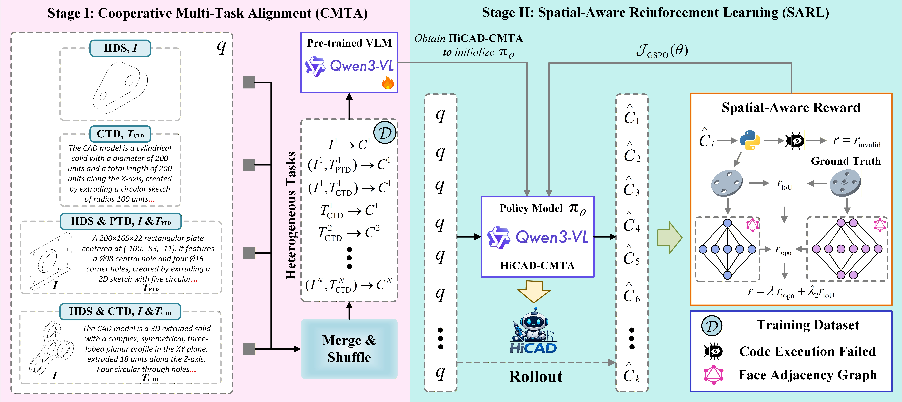

Parametric CAD modeling from human intent remains challenging, particularly during the conceptual design stage, where design goals are expressed through incomplete and unstructured modalities (e.g., hand-drawn sketches and textual descriptions). In this work, we rethink the human intent-to-CAD pipeline and propose a unified method that directly maps multi-level human intents to executable codes, without assuming the prior existence of target CAD models.
To support our study, we construct HiCAD, the first large-scale dataset aligning hand-drawn sketches, textual descriptions, and parametric CAD codes. Based on this, we introduce HiCAD, a two-stage framework comprising Cooperative Multi-Task Alignment (CMTA) to bridge the representational gap between heterogeneous inputs, and Spatial-Aware Reinforcement Learning (SARL) to enforce geometric and topological consistency.
Extensive experiments demonstrate that our method significantly outperforms existing baselines across multiple tasks, validating its effectiveness and robustness in transforming heterogeneous human intents into high-fidelity parametric CAD models.
HiCAD: A Two-Stage Framework for Human Intent-to-CAD Generation

Figure 2. Overview of the HiCAD framework. Stage I (CMTA) fine-tunes a VLM across four tasks simultaneously. Stage II (SARL) applies spatial-aware reinforcement learning with topological and geometric consistency rewards.
CMTA initializes from a pre-trained VLM (Qwen3-VL-4B-Instruct) and fine-tunes it across all four tasks simultaneously. By interleaving data from diverse tasks, it maps heterogeneous human intents into a unified modeling space, enabling positive transfer across modalities.
Objective: Minimize cross-entropy between ground truth and predicted CadQuery tokens.
SARL leverages Group Sequence Policy Optimization (GSPO) for stable training. The spatial-aware reward jointly evaluates topological consistency (via graph edit distance on B-Rep face adjacency graphs) and geometric consistency (via volumetric IoU).
Key advantage: Sequence-level importance ratios reduce gradient variance vs. token-level GRPO.
r = λ₁·rtopo + λ₂·rIoU
rtopo = 1 / (1 + GED(Ggt, Gpred))
The first large-scale benchmark aligning hand-drawn sketches, textual descriptions, and parametric CAD codes
HiCAD consistently outperforms all baselines across all tasks and metrics
| Method | HDS-to-CAD | CTD-to-CAD | HDS & PTD-to-CAD | HDS & CTD-to-CAD | ||||||||||||
|---|---|---|---|---|---|---|---|---|---|---|---|---|---|---|---|---|
| IoU↑ | IR↓ | M.CD↓ | Med.CD↓ | IoU↑ | IR↓ | M.CD↓ | Med.CD↓ | IoU↑ | IR↓ | M.CD↓ | Med.CD↓ | IoU↑ | IR↓ | M.CD↓ | Med.CD↓ | |
| GPT-4o general | 20.49 | 7.00 | 53.52 | 35.31 | 47.64 | 20.80 | 25.86 | 5.93 | 37.41 | 16.60 | 38.41 | 16.93 | 51.52 | 17.20 | 22.57 | 4.50 |
| GPT-5-mini general | 9.51 | 16.00 | 67.53 | 53.23 | 53.61 | 23.60 | 21.87 | 3.98 | 38.20 | 9.80 | 33.39 | 13.08 | 52.96 | 14.40 | 19.58 | 3.42 |
| Gemini-2.5 general | 23.72 | 19.60 | 44.70 | 23.51 | 52.94 | 35.80 | 28.22 | 4.95 | 40.87 | 28.20 | 34.85 | 11.48 | 54.01 | 23.20 | 26.09 | 3.27 |
| Claude-3.7 general | 19.48 | 15.80 | 49.51 | 31.70 | 44.21 | 28.60 | 30.11 | 6.74 | 34.11 | 22.20 | 38.86 | 18.68 | 46.81 | 26.20 | 28.99 | 6.91 |
| Qwen-VL-Max general | 22.21 | 14.20 | 44.58 | 23.17 | 46.46 | 54.20 | 28.83 | 6.21 | 36.86 | 47.20 | 35.06 | 16.59 | 52.73 | 53.20 | 23.77 | 4.48 |
| CAD-Coder† specialized | 48.89 | 3.96 | 10.56 | 2.09 | 60.08 | 3.46 | 10.90 | 0.70 | 56.38 | 4.11 | 9.47 | 1.32 | 64.61 | 3.26 | 7.60 | 0.42 |
| Cadrille† specialized | 66.54 | 9.41 | 7.03 | 0.57 | 67.19 | 6.82 | 12.27 | 0.43 | 66.86 | 8.12 | 9.41 | 0.58 | 72.56 | 7.57 | 7.75 | 0.30 |
| 🏆 HiCAD (Ours)† | 69.49 | 0.37 | 4.40 | 0.46 | 74.27 | 0.17 | 6.91 | 0.29 | 76.03 | 0.42 | 3.91 | 0.30 | 80.90 | 0.42 | 3.04 | 0.22 |
† Trained on HiCAD dataset. CD values multiplied by 10³. Green = best, underline = second best.
| Method | HDS-to-CAD | HDS & CTD-to-CAD | ||
|---|---|---|---|---|
| IoU↑ | IR↓ | IoU↑ | IR↓ | |
| GPT-4o | 7.93 | 20.00 | 18.78 | 10.00 |
| Gemini-2.5 | 9.52 | 36.00 | 20.28 | 42.00 |
| Claude-3.7 | 8.10 | 66.00 | 23.71 | 56.00 |
| CAD-Coder† | 35.72 | 8.00 | 54.57 | 3.00 |
| Cadrille† | 17.74 | 87.00 | 59.20 | 9.00 |
| 🏆 HiCAD (Ours)† | 43.27 | 3.00 | 73.37 | 0.00 |
Evaluated on 100 real sketches drawn by human volunteers. HiCAD achieves 0% invalid rate on HDS+CTD task.
| Configuration | HDS-to-CAD | CTD-to-CAD | HDS+PTD-to-CAD | HDS+CTD-to-CAD | ||||
|---|---|---|---|---|---|---|---|---|
| IoU↑ | IR↓ | IoU↑ | IR↓ | IoU↑ | IR↓ | IoU↑ | IR↓ | |
| ST-SFT (Vanilla) | 63.84 | 1.27 | 71.01 | 1.49 | 66.61 | 1.44 | 74.35 | 1.97 |
| + CMTA | 66.87 | 1.20 | 71.90 | 0.95 | 72.39 | 1.07 | 79.28 | 1.10 |
| + CMTA + SARL (Full) | 69.09 | 0.22 | 73.79 | 0.30 | 76.03 | 0.42 | 80.90 | 0.42 |
If you find our work useful, please consider citing:
@inproceedings{zhang2026hicad, title = {Rethinking Human Intent-to-CAD: Parametric CAD Model Generation via Cooperative Multi-Task Alignment and Spatial-Aware Reinforcement Learning}, author = {Zhang, Qingwang and Li, Jiahao and Zhou, Xiangdong}, booktitle = {Proceedings of the 43rd International Conference on Machine Learning}, series = {PMLR 306}, year = {2026}, address = {Seoul, South Korea}, }